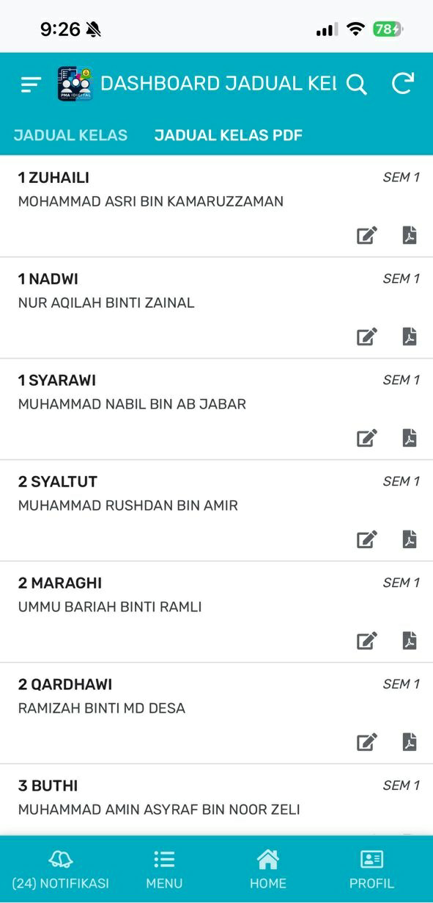

PMA
IDigital
Dokumentasi & Panduan Pengguna Rasmi Secara Terperinci.
Sistem Pengurusan Sekolah Komprehensif
Selamat datang ke ekosistem PMA IDigital. Pembentangan ini akan merungkai setiap satu daripada 20 modul utama secara terperinci untuk memudahkan urusan pentadbiran, guru, dan operasi harian sekolah.

1) e-Profil
Pangkalan data maklumat warga kerja PMA. Memudahkan komunikasi sesama staf secara efisien.


Fungsi Terperinci Modul
Maklumat Korporat
Memaparkan secara kemas maklumat penting staf PMA termasuk nama penuh, alamat e-mel rasmi, dan gambar profil korporat untuk pengecaman mudah.
Integrasi WhatsApp Terus
Dilengkapi pautan nombor WhatsApp aktif. Pengguna hanya perlu menekan butang WhatsApp pada profil, dan akan terus dibawa ke aplikasi WhatsApp untuk menghantar mesej tanpa perlu menyimpan nombor telefon di dalam peranti.
2) Kehadiran Staf
Sistem pemantauan kehadiran dan rekod keluar masuk kakitangan harian.

Fungsi Terperinci Modul
Kemas Kini Harian
Person-In-Charge (PIC) akan mengemas kini status kehadiran semua kakitangan pada setiap hari secara berpusat dan sistematik.
Makluman Ketersediaan Data
Sejurus PIC selesai mengemas kini data, satu notifikasi automatik akan dihantar menandakan bahawa "Data Kehadiran Telah Tersedia". Staf boleh terus menyemak rekod kehadiran masing-masing.
3) e-Taqwim
Kalendar pintar interaktif yang merekodkan segala jadual dan program tahunan sekolah.

Fungsi Terperinci Modul
Label Kategori Program
Kesemua program tahunan disenaraikan dan dilabel mengikut kategori secara teratur, memudahkan rujukan.
Notifikasi Pagi (Reminder)
Setiap pagi, pengguna akan menerima notifikasi "Push Reminder" yang memaklumkan apakah program yang akan berlangsung pada hari tersebut.
Rumusan Bulanan
Menyediakan fungsi rumusan Taqwim yang bertindak menyenaraikan program tahunan secara ringkas mengikut spesifik bulan pilihan.
4) e-Huffaz
Modul Halaqah untuk memantau dan mengurus rekod hafazan para pelajar secara efisien.

Fungsi Terperinci Modul
Pangkalan Data Halaqah
Memaparkan senarai nama pelajar yang telah disusun rapi mengikut Guru Hafazan masing-masing.
Rekod Hafazan Harian
Guru hafazan boleh merekodkan muka surat hafazan baharu yang dihantar oleh pelajar pada setiap sesi. Turut memaparkan rekod muka surat hantaran sebelumnya untuk kesinambungan.
Rumusan Hantaran Terakhir
Fungsi rumusan khas bertujuan untuk memaparkan maklumat "Hantaran Muka Surat Terakhir". Ia sangat penting bagi memudahkan guru membuat rujukan pantas untuk dimasukkan ke dalam sistem sekolah yang lain.
5) e-Jadual
Sistem pengurusan jadual waktu kelas & jadual persendirian guru berintegrasi notifikasi.


Bahagian Terperinci
1. Jadual Waktu Kelas
Memaparkan jadual waktu menyeluruh bagi semua kelas yang ada di sekolah.
Papar kelas sedang berlangsung secara 'Real-time'.
2. Jadual Mengajar Guru
Paparan khusus jadual mengajar peribadi bagi setiap guru.
Reminder: 10 Minit sebelum masa!
7) e-KOKO
Sistem komprehensif menguruskan kokurikulum dengan 9 komponen penting.

Pangkalan Data
- Data Guru: Maklumat guru penasihat.
- Data Pelajar: Unit koko keseluruhan pelajar.
- Senarai Ahli: Badan Beruniform, Kelab & Persatuan, Sukan & Permainan.
Pelaporan (Auto-PDF)
- Laporan Koko: Guru buat laporan setiap sesi. Auto-tukar PDF selepas disahkan.
- Laporan Luar: Laporan aktiviti luar sekolah (Auto-PDF).
Pengoperasian
- Taqwim Koko: Paparan takwim kokurikulum bulanan.
- Kehadiran Koko: Borang daftar kehadiran. Sistem akan auto-papar senarai nama pelajar ikut unit.
8) e-Hep
Modul Hal Ehwal Pelajar yang memfokuskan kepada pengurusan asrama dan pelaporan disiplin.


Fungsi Utama
Jadual Warden
Memaparkan jadual tugas warden asrama dalam format versi PDF secara susunan bulanan untuk rujukan staf dan pelajar.
e-Aduan Disiplin
Borang digital khas untuk para guru merekodkan sebarang kes pelanggaran disiplin.
Notifikasi dihantar terus ke Ketua Guru Disiplin apabila aduan direkod.
Laporan terus di-jana ke format PDF untuk arkib rekod.
9) e-Relief
Sistem pengurusan guru ganti yang sangat interaktif dan automatik bagi kelas yang tiada guru.

Aliran Kerja (Workflow) e-Relief
1. Rekod & Cadangan Automatik
PIC merekod kelas kosong. Sistem secara automatik akan memaparkan hanya guru yang 'Free' pada waktu tersebut.
2. Notifikasi Lantikan
Guru yang dipilih menjadi guru ganti akan terus menerima notifikasi lantikan tugasan relief di telefon mereka.
3. Peringatan (Reminder) Terakhir
10 minit sebelum masa kelas bermula, guru terbabit akan mendapat notifikasi 'reminder' untuk segera masuk ke kelas.
4. Pelaporan Bulanan
Data relief direkodkan mengikut bulan untuk tujuan pelaporan rasmi PIC Relief.
10) e-Program
Papan buletin digital sehenti untuk menghebahkan acara rasmi sekolah.

Maklumat Program Berpusat
Fungsi ringkas namun padat ini memaparkan dengan jelas maklumat acara yang akan berlangsung merangkumi:
11) e-Tempah
Sistem tempahan fasiliti & bilik sekolah dengan kawalan pertindihan masa.

Sistem Tempahan Pintar
Cegah Pertindihan (Clash Prevention)
Guru boleh memilih masa dan tarikh. Sistem hanya akan memaparkan bilik fasiliti yang berstatus 'Available' (Kosong) sahaja pada waktu tersebut.
Notifikasi PIC Bilik
Person-in-charge (PIC) bagi setiap bilik fasiliti akan terus menerima notifikasi untuk merekodkan penggunaan bilik jagaan mereka.
Notifikasi Peringatan Penempah
Guru yang telah berjaya membuat tempahan akan menerima notifikasi 'reminder' peringatan tentang tempahan bilik mereka apabila tarikh menghampiri.
12) e-Exam
Pusat pentadbiran peperiksaan merangkumi bank soalan dan sistem pengawasan dewan.

3 Bahagian Utama
Kertas Peperiksaan
Ruang muat naik digital. Hanya Setiausaha Peperiksaan dalaman yang mengawal dan menyelaraskan penerimaan kertas soalan dari guru-guru.
Jadual Pengawas
Paparan jadual khusus untuk guru yang bertugas mengawas sahaja (Digital & PDF).
Peringatan automatik 10 minit awal sebelum masuk dewan.Jadual Peperiksaan
Papan maklumat yang memaparkan jadual keseluruhan peperiksaan dalam versi PDF dan digital untuk rujukan umum sekolah.
13) e-Pengumuman
Sistem penyiaran informasi (broadcasting) dalaman sekolah.

Ciri Penyiaran Bersasar
Guru atau staf boleh mencipta dan membuat pengumuman penting secara digital melalui aplikasi. Hebahan boleh dikawal mengikut dua kategori sasaran (Target):
Kumpulan Pelajar
Dituju kepada spesifik kelas yang dipilih.
Semua Staf
Hebahan menyeluruh kepada kakitangan.
14) e-Kehadiran
Modul pendaftaran kehadiran pelajar sewaktu perhimpunan rasmi / rollcall pagi.

Pengurusan Rollcall
Rekod Guru Bertugas
Modul ini dicipta khas untuk kegunaan Guru Bertugas dan Guru Kelas. Setiap pagi semasa 'Rollcall', Guru Bertugas akan mendigitalkan rekod kehadiran pelajar yang hadir dan ponteng.
Tindakan 'Submit' Makluman
Setiap kali Guru Bertugas menekan butang Submit untuk menghantar data kehadiran, sistem akan menghantar notifikasi secara borong (broadcast) kepada semua staf sekolah sebagai makluman kehadiran harian pelajar.
16) e-Kesihatan
Modul rekod kecemasan dan pemantauan status kesihatan pelajar di sekolah.

Rekod Klinikal Pelajar
Fungsi ini dibina khusus untuk mendaftarkan dan merekod sekiranya terdapat mana-mana pelajar yang tidak sihat atau mengalami sakit pada waktu persekolahan.
Tindakan Automatik Sistem:
Serta-merta, sistem akan menghantar "Notifikasi Kecemasan" secara terus kepada:
- 1. Guru Kelas Pelajar Terlibat
- 2. PIC Guru Kesihatan Sekolah
17) e-Transport
Platform tempahan rasmi logistik (Van / Bas) yang dikawal rapi menerusi aliran kelulusan.

Aliran Proses Tempahan
Permohonan
Guru mengisi butiran tempahan ke destinasi.
Semakan Penyelaras
Penyelaras tempahan bas/van dapat noti untuk menyemak jadual dan membuat pengesahan (Sahkan).
Kelulusan Mudir
Mudir mendapat notifikasi akhir untuk menyemak dan memberi status 'Kelulusan'.
Pelaksanaan (Pemandu)
Sebaik diluluskan, pemandu logistik akan mendapat notifikasi tugasan dan rekod jadual perjalanan rasmi.
18) e-Daurah
Modul kerohanian khusus untuk pengurusan program Daurah tahunan sekolah secara holistik.

Kandungan Utama
1. Jadual Daurah
Sistem memaparkan senarai jadual perancangan Daurah untuk sepanjang tahun.
2. Maklumat Butiran
Menyajikan paparan poster digital rasmi program Daurah berserta butiran lanjut: Masa mula, Tempat acara, dan senarai nama Penceramah jemputan.
3. Kehadiran Daurah
Borang digital yang berfungsi untuk merekodkan pengesahan dan kehadiran pelajar-pelajar yang menyertai program Daurah berkenaan.
19) Ai Tools
Mengintegrasikan kuasa Kecerdasan Buatan (AI) termaju ke dalam 2 alat bantu inovatif PMA.


Ai RPH
Penolong maya yang dibangunkan khusus untuk membantu meringankan beban guru-guru dalam merangka draf Rancangan Pengajaran Harian (RPH) dengan idea yang dijana melalui enjin AI.
Pilihan Model AI Tersedia:
TANYA Abqari
Bot Pembantu AI (Chatbot) interaktif yang dilatih untuk menjawab semua persoalan lazim, isu teknikal, dan panduan pengoperasian mengenai Apps PMA IDigital secara langsung 24/7.
Dikuasakan Oleh
Model Gemini 2.5 Flash
20) e-Link
Pusat pautan URL bersepadu untuk capaian pantas portal rasmi sekolah.

Pautan Penting Sekolah
Modul e-Link berfungsi sebagai ruang direktori yang menghimpunkan kesemua pautan laman web/portal yang penting mengenai sekolah (contoh: portal KPM, laman e-operasi, portal ibu bapa) untuk akses sehenti dari dalam aplikasi sahaja.
21) Sejarah Notifikasi
Log sistem terpusat yang merekodkan kesemua sejarah mesej dan pemberitahuan aplikasi.

Peti Masuk (Inbox)
Tahukah anda? PMA IDigital dilengkapi ciri log notifikasi berpusat.
Setiap pemberitahuan, peringatan kelas, kelulusan tempahan, atau pengumuman yang dihantar ke telefon pintar anda akan turut disimpan sebagai rekod (history) di dalam apps.
Ciri ini sangat penting bagi memastikan pengguna tidak akan terlepas sebarang makluman walaupun mereka telah secara tidak sengaja terpadam notifikasi di skrin utama (swiped-away) peranti mereka.
Sedia Untuk Menjana Kecemerlangan
Dengan 20 modul pintar terbina di dalam PMA IDigital, kami komited mengurangkan beban kerja manual dan meningkatkan keberkesanan pentadbiran sekolah berasaskan kecerdasan digital masa hadapan.